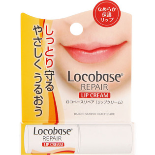
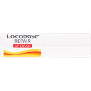

返回列表
产品名称：ロコベースリペアリップクリーム

第一三共ヘルスケア ロコベースリペアリップクリーム ３ｇ
メーカー 第一三共ヘルスケア
JANコード 4987107622068
商品の特徴
乾燥や荒れに悩む唇のことを考えた処方です。
- 成分・分量
- 【成分】
水添ポリイソブテン、トリ（カプリル酸/カプリン酸）グリセリル、
ジカプリン酸ネオペンチルグリコール、リンゴ酸ジイソステアリル、
ヘキサヒドロキシステアリン酸ジペンタエリスリチル、合成ワックス、
テトライソステアリン酸ペンタエリスリチル、
トリイソステアリン酸ポリグリセリル-2、ミリスチン酸オクチルドデシル、
スクワラン、ラウロイルグルタミン酸ジ（フィトステリル/オクチルドデシル）、
炭酸Mg、セラミド3、コレステロール、キャンデリラロウ、パルミチン酸、
オレイン酸、シア脂、トコフェロール
- 用法及び用量
- 乾燥が気になる唇に1日に数回適量をお使い下さい。